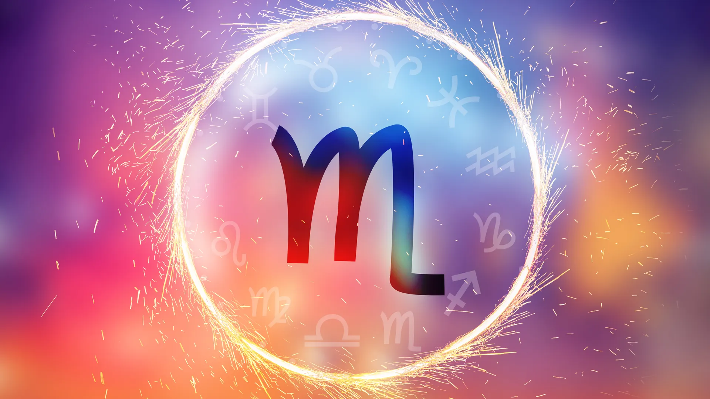
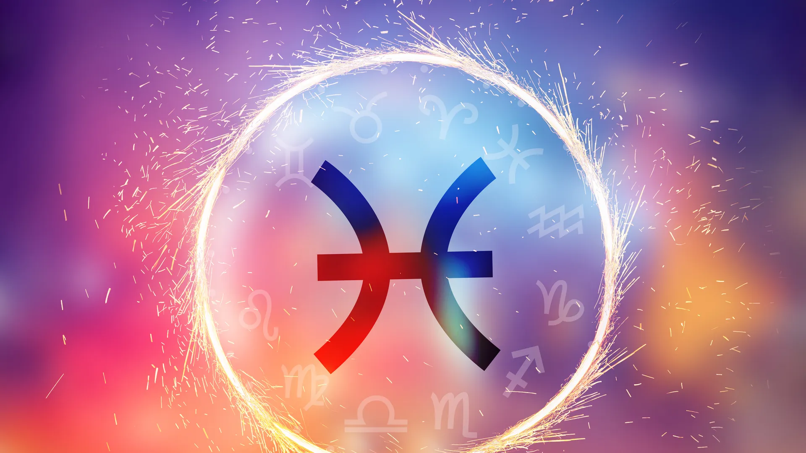

Este muy popular signo corresponde a las personas nacidas a finales de la primavera y principios del verano, es decir, entre el 21 de junio y el 22 de julio. Son las personas correspondientes al signo Cáncer. Las personas nacidas bajo el signo de Cáncer suelen ser emocionales, intuitivas y protectoras, pero también tienden a ser muy sensibles y poseen una gran imaginación.
La temporada de Escorpio comprende del 23 de octubre y el 21 de noviembre. Esta son las fechas en las que nacen lo que pertenecen al signo zodiacal que se caracteriza por su sensualidad y encanto. Los Escorpio son misteriosos porque son pensadores profundos, reservados y apasionados. A pesar de su capacidad para ser populares, hay algo muy solitario en los Escorpio. También son conocidos por su pasión, asertividad, determinación y decisión. Son líderes natos y siempre están en busca de la verdad sin importar cuál sea la situación. Escorpio también es considerado como el signo más sensual de la carta zodiacal. Una de las mejores cosas de Escorpio es su lealtad hacia sus seres queridos. Valoran la confianza y la honestidad, lo que los convierte en un signo ferozmente leal, y esperan que sus parejas sean de la misma manera.
Los nacidos entre el 19 de febrero y el 20 de marzo tienen la suerte de ser Piscis. Este signo marca el final del invierno y el comienzo de la primavera, lo que le da a los piscianos una conexión única con la naturaleza en constante cambio. Los Piscis son seres intuitivos, emocionales y creativos que aportan una perspectiva única y profunda a la vida. Su capacidad para conectar con las emociones y su inclinación hacia el arte y la espiritualidad los convierte en individuos especiales en el mundo del zodiaco.